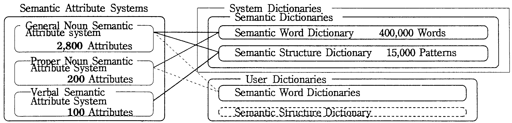
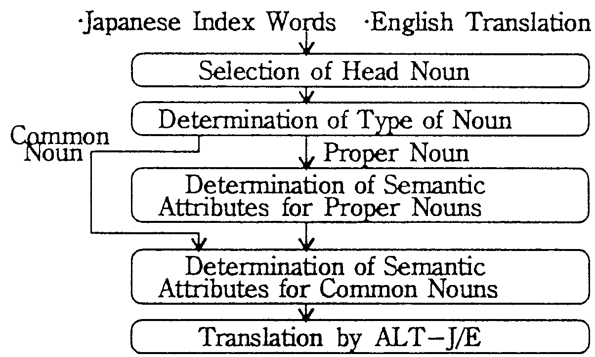

This paper proposes a method that automatically acquires the SAs (semantic attributes) of user defined words. Applying this method to the compilation of a user dictionary targeting newspaper article sentences and sentences of software design documents has revealed that the automatically determined SAs include 50 to 80% of the correct attributes. Translation experiments confirmed that the automatically acquired SAs improved translation quality by 6-13%.
When working with a MT(machine translation) system, users compile user dictionaries for the words which are not registered in the system dictionaries or for those with inappropriate translations [1]. But when registering new words in a dictionary, there is a need to give not just the index word and translated word, but also syntactic, semantic and various other information. Systems aiming at higher levels of translation quality require more detailed and accurate information [2,3], and it is no simple task for laymen to give such information. In particular, semantic information usually requires the skill of professionals.
In this paper, attention has been focused on the characteristics of user defined words. A method is proposed where for index words (noun words or compound nouns) in the original language that users seek to register, one need give only the translation in the target language to permit the system apply the knowledge held in the system dictionaries, automatically judge the type of noun and determine the SAs of the word for the noun types.
Here, we shall refer to the dictionary prepared in advance by the MT system as a system dictionary and the dictionary prepared and used by users as a user dictionary.
For the case of the Japanese to English MT system ALT-J/E[4], the relationship between the system dictionaries, the user dictionaries and word SAs are shown in Figure 1. In the semantic dictionaries, semantic information is written using SAs.
|
 |
Common nouns in the semantic word dictionary are given common noun SAs (generally more than one). For proper nouns, both common noun SAs and proper noun SAs (both more than one) are given. Verbal SAs are given to sentence patterns registered in the semantic structure dictionary [5].
A method of determining the SAs of user defined words is shown in Figure 2. This method works using the information held in the system dictionaries when index words (Japanese expressions) of user defined words and their translations(English) have been provided by the user.
|
 |
The procedures consist of determining the head noun, noun type (proper and/or common noun), proper noun SAs (for proper nouns) and common noun SAs (for both common and proper nouns).
SAs are determined using information from index words, their English translations, head nouns, and the contents of the system dictionaries.
The proposed method was used to determine the SAs to create user dictionaries for translating newspaper articles and software design documents shown in Tabe 3. The following 3 methods were examined.
| á@ | Automatic Determination (Proposed Method) | |
| áA | Manual Determination (Manual Method) | |
| áB | Experimental Determination (Correct Attributes) |
| Characteristics | Newspaper | Specification |
| Total Number of Sentences (Sentences include UDW) | 102 (53) Sentences | 105 (90) Sentences |
| Average Number of Characters or Words / Sentence | 43.8 Chr. 21.2 Wds | 40.3 Chr. 16.0 Wds |
| Number of UDW, Common Noun + Proper Noun | 26+51= 77 Wds | 98 + 7 = 105 Wds |
(1) Accuracy of Noun Type (Table 2)
In the case of newspaper articles, the method's accuracy in determining the noun type was 93.5%. Manual determination achieved an accuracy rate of 94.8%. Similar results were obtained for the software specification documents.
| Document | Methods | Accuracy |
| Newspaper Articles | Proposed Method | 93.5% |
| Manual Method | 94.8% | |
| Software Specification | Proposed Method | 89.5% |
| Manual Method | 97.1% |
(2) Accuracy of Semantic Attributes (Table 3)
| Documents | Accuracy | Proposed Method | Manual Method |
| Newspaper Article | Relevance Factor | 48.3% (57.5%) | 75.8% (86.0%) |
| Recall Factor | 66.3% (78.9%) | 77.1% (87.4%) | |
| Software Specification | Relevance Factor | 19.5% (25.2%) | 54.7% (68.6%) |
| Recall Factor | 34.8% (44.9%) | 37.9% (47.5%) |
| Method | Text | Newspaper Article | Software Specification | ||||
| Translation Quality |
Translation Success Rate |
Sentences where Quality Improved* |
Translation Success Rate |
Sentences where Quality Improved* | |||
| Case 1 | Without Attributes | 56.7 % | ± 0.0 % | 65.7 % | ± 0.0 % | ||
| Case 2 | Proposed Method | 69.6 % | + 16.7 % | 71.4 % | + 10.5 % | ||
| Case 3 | Manual Method | 71.6 % | + 21.6 % | 71.4 % | + 15.2 % | ||
| Case 4 | Correct Attributes | 72.5 % | + 25.5 % | 73.3 % | + 23.8 % | ||
Translation experiments were conducted for the 4 cases (3 cases shown in the section 4 plus the case without SAs) using the same texts used in the above section.
It can be seen in table 4 that using the automatically determined SAs improved the translation quality by 6-13%. This improvement is almost the same as that achieved with manually determined SAs. The translation success rate is 2-3% lower than that achieved with the correct attributes. This is, however, satisfactory if we consider the high cost needed to obtain the correct attribute by repeatedly tuning them.
Thus, automatic determination makes it possible to acquire useful sets of SAs; a task which normally requires the most labor in creating user dictionaries.
A method that automatically determines the SAs of user defined words was proposed. The method was applied to create the dictionaries needed to translate several newspaper articles and some software specifications. The results show that the automatically determined SAs include 50 to 80% of the correct attributes. This value is 5-10% smaller than that achieved with manual determination (50Å`90%), but is still high enough to improve translation quality. Translation experiments confirmed that using the automatically determined SAs improved translation quality by 6-13%.